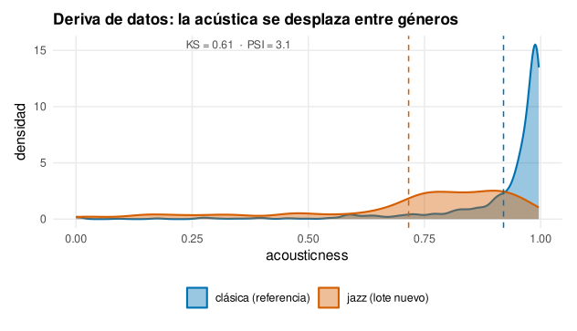
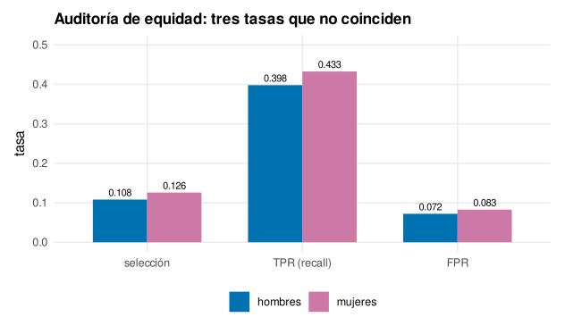
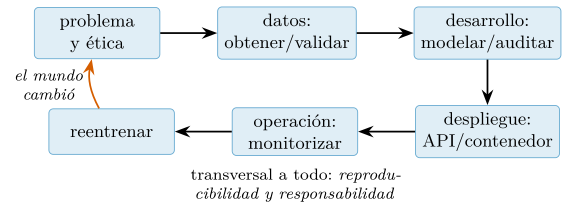

Capítulo 16. Reproducibilidad, ingeniería, despliegue y ética
▶ Ejecutar este capítulo en Binder
La primera vez que se abre, Binder construye el entorno en la nube (unos 10-20 min); verás una pantalla de progreso. Después queda en caché y abre en segundos. Si parece que no responde, espera a que termine de construirse o vuelve a intentarlo.
Llegamos al final. El libro empezó en el cap. 1 preparando un entorno y termina aquí, donde todo lo aprendido —manipular datos, analizarlos, visualizarlos, modelarlos, protegerlos— se convierte en algo que funciona fuera del ordenador de quien lo escribió: reproducible por otros, probado contra sus fallos, desplegado en producción y ejercido con responsabilidad. Este capítulo trata de la ingeniería de la ciencia de datos —la disciplina que separa un análisis que corrió una vez de un sistema en el que se puede confiar— y de la ética que debe acompañarla, porque un modelo técnicamente impecable puede, aun así, causar daño. No es un apéndice: es lo que convierte a un usuario de R en un profesional.
El hilo conductor es una idea que ha recorrido todo el libro: la diferencia entre que algo funcione y que sea fiable. Un guion que da el número correcto hoy, en esta máquina, con estos datos, ha funcionado; un sistema fiable da el número correcto mañana, en otra máquina, cuando los datos cambien y cuando quien lo escribió ya no esté para arreglarlo. Esa fiabilidad no es un lujo ni una manía de perfeccionistas: es la condición para que la ciencia de datos merezca su nombre de ciencia —reproducible, verificable— y para que se pueda llevar a producción sin que falle donde importa. R, con su tradición de paquetes cuidados y su ecosistema de reproducibilidad, da las herramientas; este capítulo enseña a usarlas como un ingeniero, no solo como un analista.
Recorreremos, en orden, las capas de esa ingeniería: la reproducibilidad como principio, el control de versiones que la hace posible, las pruebas que blindan el código, la validación que blinda los datos, la automatización que lleva el prototipo a producto, la monitorización que vigila un modelo desplegado, y —la capa que ninguna de las anteriores cubre— la ética que decide si el sistema debe existir y a quién puede dañar. Cerraremos el libro donde lo empezamos: con la idea de que hacer ciencia de datos bien es, sobre todo, hacerla de forma que otros puedan confiar en ella.
Conviene una advertencia sobre el lugar de este capítulo en la formación de un científico de datos, porque es el que más se descuida. La enseñanza de la ciencia de datos suele concentrarse en lo vistoso —los modelos, los algoritmos, las visualizaciones— y despachar la ingeniería como un detalle de fontanería que ya se aprenderá en el trabajo. Es un error de énfasis con consecuencias caras. En la práctica profesional, la proporción se invierte: el modelado —lo que ocupa el grueso de los cursos— es una fracción pequeña del esfuerzo, y el grueso se va en lo que este capítulo enseña —preparar los datos, versionar, probar, desplegar, mantener, documentar—. El analista que domina los modelos pero no la ingeniería produce prototipos brillantes que nunca llegan a producción o que fallan al llegar; el que domina ambos produce sistemas que funcionan en el mundo real. Que este capítulo cierre el libro no significa que sea un apéndice opcional: significa que corona todo lo anterior, convirtiendo el conocimiento técnico de los quince capítulos previos en algo que sirve fuera del aula. Sin esta capa, lo demás es un ejercicio; con ella, es una profesión.
Reproducibilidad: el principio que sostiene el libro
Arranquemos por lo que sostiene el resto. Decimos que un resultado es reproducible si cualquiera —uno mismo dentro de un año incluido— consigue reconstruirlo tal cual partiendo de idénticos datos e idéntico código. Suena obvio y es sorprendentemente raro: el análisis que se hizo a mano en la consola, el gráfico que se retocó en un editor, el número que salió de una hoja de cálculo perdida, el paquete que cambió de versión —todo eso rompe la reproducibilidad sin que nadie lo note hasta que hay que rehacer el trabajo y no se puede—. Este libro ha predicado la reproducibilidad desde su primera página, y la ha practicado: cada cifra y cada figura se regeneran con un guion versionado, cada azar se fija con una semilla, cada dato se deriva de una fuente trazable. Este capítulo formaliza esa disciplina.
Que la reproducibilidad importe no es una opinión metodológica menor: es la respuesta a una crisis real. En la última década, la ciencia ha descubierto con alarma que una fracción enorme de sus resultados publicados no se reproduce —experimentos que nadie logra repetir, análisis que dan otro número al reejecutarse, código que se perdió o nunca se compartió—. La ciencia de datos no es inmune; al contrario, su dependencia del código y de los datos la hace especialmente frágil. Un análisis complejo es una cadena de decisiones —qué datos, qué limpieza, qué semilla, qué versión de qué paquete— y basta que una no quede registrada para que el resultado sea irrepetible, y por tanto, en sentido estricto, no científico. La reproducibilidad no es, pues, una manía de ordenados: es la línea que separa un resultado en el que se puede confiar de una anécdota que corrió una vez y nadie puede verificar. Y tiene un beneficiario inmediato que suele olvidarse: uno mismo. El «yo del futuro» que retoma un proyecto meses después es, a efectos prácticos, otra persona, y le agradecerá al «yo del pasado» cada decisión registrada tanto como se lo agradecería un colaborador. Trabajar de forma reproducible es, antes que un deber con la ciencia, un favor que uno se hace.
La reproducibilidad tiene grados, y conviene distinguirlos. En el nivel más básico, el código versionado: todo el análisis es código —no gestos manuales— guardado y con historial. En el siguiente, el entorno fijado: las versiones exactas de R y de cada paquete quedan registradas, porque un análisis que corría con una versión puede fallar o cambiar con otra. Más allá, el pipeline reproducible: un solo comando regenera todo el análisis desde los datos crudos, sin pasos manuales que se olviden. Y en la cima, la reproducibilidad computacional total: cualquiera, en cualquier máquina, obtiene bit a bit el mismo resultado, gracias a contenedores que congelan el sistema entero. Cada nivel cuesta más y protege más, y elegir hasta dónde subir es, como todo en ingeniería, un compromiso entre esfuerzo y garantía. Este capítulo recorre las herramientas de cada nivel: Git para el código, renv para el entorno, targets para el pipeline, y los contenedores para el todo.
Conviene distinguir dos conceptos que a menudo se confunden, porque no son lo mismo y exigen cosas distintas. La reproducibilidad es que otra persona, con los mismos datos y el mismo código, obtenga el mismo resultado —una propiedad del análisis, que depende de que todo esté registrado—. La replicabilidad es que un estudio nuevo, con datos nuevos recogidos de forma independiente, llegue a la misma conclusión —una propiedad del hallazgo, que depende de que sea real y no un accidente de unos datos concretos—. La primera es responsabilidad técnica de quien hace el análisis y este capítulo la garantiza; la segunda es la que valida de verdad un descubrimiento científico y ninguna herramienta la asegura sola. Un resultado puede ser perfectamente reproducible —cualquiera reobtiene el mismo número— y a la vez no replicable —ese número era una casualidad de esos datos que otro experimento no confirma—. Confundir ambas lleva a un error común: creer que un análisis reproducible es, por ello, correcto. No lo es necesariamente; la reproducibilidad es condición necesaria de un buen resultado —sin ella no se puede ni verificar— pero no suficiente. Este capítulo asegura lo primero; el rigor de todo el libro —partir bien, medir con honradez, no sobreajustar— apunta a lo segundo.
Control de versiones con Git
La primera herramienta, y la más fundamental, es el control de versiones. Antes de presentarlo, conviene apreciar el problema que resuelve, porque quien no lo ha sufrido no valora la solución. Sin control de versiones, la historia de un proyecto se guarda en una maraña de ficheros —analisis_final.R, analisis_final_v2.R, analisis_final_DEFINITIVO.R, analisis_bueno_este_si.R— que todos hemos visto y que es la negación misma de la reproducibilidad: nadie sabe cuál es el bueno, qué cambió entre uno y otro, ni cómo volver a un estado anterior si el nuevo rompe algo. Es un caos que crece con el proyecto hasta volverlo inmanejable, y que en equipo se multiplica, con versiones que se pisan y trabajo que se pierde. El control de versiones sustituye esa maraña por una historia limpia y única.
Git —el sistema estándar, que este libro ya mencionó en el cap. 1— registra la historia completa de un proyecto: cada cambio, quién lo hizo, cuándo y por qué. No es solo una copia de seguridad; es la memoria del proyecto, que permite volver a cualquier estado anterior, entender cómo llegó el código a ser lo que es, y —crucial en la ciencia de datos— colaborar sin pisarse. Los conceptos son pocos: un commit es una foto del proyecto en un instante, con un mensaje que explica el cambio; una rama (branch) es una línea de trabajo paralela donde probar sin romper lo que funciona; y fusionar (merge) integra una rama en otra. Sobre eso, plataformas como GitHub añaden la colaboración: la revisión por pares (pull request), donde un cambio se discute y aprueba antes de integrarse, que es a la vez control de calidad y transmisión de conocimiento.
Conviene una palabra sobre la higiene de los commits, porque es lo que separa un historial útil de uno inservible. Un commit debe ser atómico —un cambio con sentido propio, no una mezcla de tres cosas inconexas— y traer un mensaje que explique el porqué, no el qué (que el propio código ya muestra). «Corrige el cálculo de la mediana que ignoraba los ausentes» es un buen mensaje; «cambios varios» es un mensaje inútil que condena al historial a la ilegibilidad. La razón es práctica: el historial se lee, y mucho —para entender por qué el código es como es, para localizar cuándo entró un fallo (con git bisect), para revertir un cambio concreto sin arrastrar otros—. Un historial de commits cuidados es documentación viva del proyecto; uno descuidado es ruido. La misma disciplina que este libro pide para el código —nombres claros, funciones pequeñas— vale para los commits: son también, a su manera, comunicación con quien vendrá después.
Y una nota sobre las ramas, porque estructuran el trabajo en equipo. La convención más común mantiene una rama principal (main) siempre estable —la que se despliega— y desarrolla cada tarea en una rama propia, que se integra por pull request solo cuando pasa la revisión y las pruebas automáticas. Así, el código roto nunca contamina lo estable, varias personas trabajan en paralelo sin pisarse, y cada cambio queda documentado en su discusión de integración. Es la traducción, al trabajo cotidiano, del principio del capítulo —automatizar la disciplina—: la calidad no depende de que cada quien recuerde no romper nada, sino de una estructura que lo hace difícil.
Hay una dimensión de Git que trasciende lo técnico y que conviene nombrar: es la infraestructura de la colaboración moderna en datos. La revisión por pares del pull request no es solo control de calidad; es el mecanismo por el que el conocimiento se transmite en un equipo —quien revisa aprende cómo piensa quien escribió, y quien escribió recibe una mirada que detecta lo que a él se le pasó—. Es también la memoria institucional del proyecto: cuando alguien se marcha, su razonamiento no se va con él, sino que queda en el historial de commits y en las discusiones de integración, legible para quien lo herede. Y es la base de la ciencia abierta: un análisis cuyo código vive en un repositorio público puede ser inspeccionado, verificado y reutilizado por cualquiera, que es la reproducibilidad llevada a su conclusión —no solo «yo puedo rehacerlo», sino «cualquiera puede»—. En un mundo donde la ciencia de datos alimenta decisiones que afectan a mucha gente, esa transparencia del código deja de ser una cortesía entre colegas para convertirse en una forma de rendición de cuentas: un resultado cuyo código nadie puede ver es un resultado que hay que creer a ciegas, y creer a ciegas no es hacer ciencia.
Una última convención del oficio que Git posibilita: el proyecto se documenta a sí mismo. Un fichero README en la raíz del repositorio —que explique qué hace el proyecto, cómo se instala, cómo se ejecuta— es la puerta de entrada para cualquiera, incluido uno mismo dentro de un año. Cuesta minutos escribirlo y ahorra horas de arqueología; su ausencia condena al proyecto a que solo su autor sepa arrancarlo, que es la antítesis de la reproducibilidad. Junto al README, un fichero de licencia que declare qué se puede hacer con el código, y una estructura de carpetas convencional, hacen que el repositorio se explique solo. La documentación no es un extra que se hace si sobra tiempo; es parte del producto, tanto como el código, porque un análisis que nadie más sabe ejecutar es, a efectos prácticos, un análisis que no se puede reproducir.
La regla propia de los datos: versionar el código, no los datos
Hay una regla específica de la ciencia de datos que conviene fijar de entrada, porque el instinto lleva a lo contrario: Git es para el código, no para los datos. Un repositorio de Git se diseñó para archivos de texto pequeños que cambian línea a línea; un fichero de datos —un parquet de gigabytes, un modelo entrenado— es binario, grande y cambia de golpe, y meterlo en Git hincha el historial hasta volverlo inmanejable. La disciplina correcta es versionar el código, la configuración y la documentación en Git, y dejar los datos fuera —en un almacenamiento de datos, referenciados por una ruta o un identificador— listándolos en el fichero .gitignore para que Git los ignore. Lo que sí se versiona es el guion que genera los datos derivados, no los datos en sí, porque con el código y los datos crudos siempre se pueden regenerar, y esa es justo la promesa de la reproducibilidad. La excepción razonable son los datos pequeños de ejemplo —como los que acompañan a este libro—, que sí caben. La regla en una frase: en Git va todo lo que se puede leer y diferenciar como texto; los datos van aparte, y el código que los produce va en Git.
# .gitignore de un proyecto de datos: qué NO versionar
data/raw/ # datos crudos: fuera de Git, se descargan aparte
data/processed/ # datos derivados: se regeneran con el codigo
*.parquet # ficheros de datos grandes
*.rds # modelos y objetos serializados
.Rhistory # historial de la consola
renv/library/ # la biblioteca de paquetes (se restaura con renv)El entorno: reproducir también los paquetes
Versionar el código no basta si el código depende de paquetes que cambian. Un análisis que funcionaba con una versión de un paquete puede dar otro resultado —o fallar— con la siguiente, y ese es uno de los fallos de reproducibilidad más frustrantes, porque el código no cambió y aun así el resultado sí. La solución en R es renv: crea, para cada proyecto, una biblioteca de paquetes aislada y registra en un fichero (renv.lock) la versión exacta de cada uno. Con ese fichero versionado en Git, cualquiera restaura el entorno idéntico con una orden, y el análisis corre con los mismos paquetes con que se escribió.
renv::init() # crea el entorno aislado del proyecto
renv::snapshot() # registra en renv.lock la version de cada paquete usado
# ... otra persona, otra maquina, clona el repo y ejecuta:
renv::restore() # reinstala EXACTAMENTE esas versionesEs el mismo principio que la partición train/test del cap. 13 o el presupuesto de privacidad del cap. 15: convertir una buena intención —«usar los mismos paquetes»— en una garantía inscrita en un fichero, imposible de olvidar. La reproducibilidad, una y otra vez en este libro, no se confía a la memoria ni a la disciplina, sino que se hace código.
Conviene entender por qué el entorno es tan traicionero, porque es un fallo de reproducibilidad especialmente frustrante. El código que uno escribe es visible —está a la vista, se versiona, se revisa—; el entorno en que corre es invisible —las docenas de paquetes, cada uno con su versión, sus dependencias, su comportamiento que puede cambiar entre versiones sin previo aviso—. Un análisis depende de ese entorno invisible tanto como del código visible, y cuando falla al reejecutarse en otra máquina o meses después, la causa suele estar ahí, en una versión que cambió, y es difícil de diagnosticar precisamente porque no se ve. renv hace visible lo invisible: lo escribe en un fichero que se versiona y se revisa como el código. Es un patrón que se repite en toda la ingeniería de este capítulo —hacer explícito lo implícito, escribir lo que se daba por supuesto—, porque lo que no está escrito no se puede reproducir, ni auditar, ni confiar. La reproducibilidad, en el fondo, es la disciplina de no dejar nada importante fuera del registro.
Pruebas automatizadas: blindar el código
El código que procesa datos tiene una traición particular: puede estar mal y parecer bien, porque produce un número plausible en vez de un error visible. Una función que calcula una media olvidando los ausentes, un filtro con el signo invertido, una fusión que duplica filas: ninguno lanza un error, todos dan un resultado que se acepta y se propaga. La defensa contra estos fallos silenciosos son las pruebas automatizadas: código que comprueba que otro código hace lo que debe, y que se ejecuta cada vez que algo cambia. En R, la herramienta estándar es testthat (Wickham 2011).
Conviene entender por qué las pruebas importan más en la ciencia de datos que en muchos otros tipos de software, en contra de la creencia de que son cosa de «programadores de verdad». En una aplicación web, un fallo suele ser visible —la página no carga, un botón no funciona— y alguien lo reporta. En un análisis de datos, el fallo es invisible: el código corre, produce un número, y ese número se usa para tomar una decisión sin que nadie sepa que estaba mal. No hay pantalla en blanco que delate el error; hay un gráfico convincente y una conclusión falsa. Esa invisibilidad hace que la ciencia de datos sea, paradójicamente, el campo donde las pruebas más falta hacen y menos se usan —porque la cultura del analista, formada en la exploración rápida, rara vez incluye el hábito de probar—. Adoptar ese hábito, tratar el código de análisis con el mismo rigor que el de una aplicación crítica, es uno de los saltos que más distinguen al profesional del aficionado, y uno de los que este capítulo más insiste en dar.
Pruebas por ejemplo con testthat
La forma más común de probar es por ejemplo: se elige un caso concreto, se calcula a mano el resultado esperado, y se comprueba que la función lo produce. testthat lo expresa con expectativas legibles —expect_equal, expect_true, expect_error— agrupadas en bloques test_that con un nombre que describe qué se prueba. Tomemos una función sencilla que normaliza un vector al rango \([0,1]\), y probémosla en los casos que importan, incluidos los bordes que suelen fallar:
library(testthat)
normaliza <- function(x) {
if (length(x) == 0) return(numeric(0)) # caso borde: vector vacio
rng <- range(x, na.rm = TRUE)
if (diff(rng) == 0) return(rep(0, length(x))) # caso borde: constante
(x - rng[1]) / diff(rng)
}
test_that("normaliza: casos concretos", {
expect_equal(normaliza(c(0, 5, 10)), c(0, 0.5, 1)) # caso tipico
expect_equal(normaliza(c(7, 7, 7)), c(0, 0, 0)) # constante -> 0
expect_true(all(normaliza(runif(100)) >= 0)) # cota inferior
expect_length(normaliza(1:20), 20) # preserva longitud
})
#> Test passedLas cuatro expectativas pasan. Nótese que las pruebas no solo verifican el caso típico —que cualquiera comprobaría a ojo— sino sobre todo los bordes: el vector constante (donde dividir por el rango sería dividir por cero), la longitud, la cota. Ahí es donde el código falla, y ahí es donde una prueba paga su coste. Escribir la prueba obliga, además, a pensar qué debe hacer la función en esos bordes —¿qué es normalizar un vector constante?— una decisión de diseño que sin la prueba quedaría implícita y frágil. Las pruebas son documentación ejecutable: dicen, con precisión que ningún comentario alcanza, qué se espera del código, y avisan en el acto si un cambio futuro lo rompe.
Hay un tipo de comprobación especialmente relevante en la ciencia de datos que merece mención: la del propio análisis, no solo de las funciones auxiliares. Es tentador probar la función que normaliza y olvidar verificar que el flujo de datos, en conjunto, hace lo que debe —que tras la limpieza no quedan ausentes donde no debía, que la partición no filtra el test, que el número de filas cuadra tras una fusión—. Estas comprobaciones de cordura (sanity checks), intercaladas en el análisis con stopifnot o aserciones, atrapan los errores más caros —los que no rompen el código pero corrompen el resultado— antes de que se propaguen. Un análisis salpicado de aserciones que verifican sus propias suposiciones —«aquí no debería haber ausentes», «estas dos tablas deben compartir las claves»— falla ruidosamente cuando una suposición se quiebra, en vez de seguir produciendo un número plausible y falso. Es la misma filosofía de las pruebas llevada al flujo de datos: convertir las suposiciones tácitas en comprobaciones explícitas, para que el error salte donde se produce y no diez pasos después, ya disfrazado de resultado.
Pruebas por propiedad con hedgehog
Las pruebas por ejemplo tienen un límite: solo comprueban los casos que a uno se le ocurren, y los fallos suelen esconderse justo en los que no se le ocurrieron. Las pruebas basadas en propiedades (property-based testing) atacan ese punto ciego: en vez de fijar ejemplos, se declara una propiedad que debe cumplirse para toda entrada, y la herramienta genera cientos de casos aleatorios —incluidos los raros que uno nunca probaría— buscando uno que la viole. Es un cambio de mentalidad: de «para esta entrada, este resultado» a «para cualquier entrada, esta regla». El paquete de R es hedgehog, heredero de una tradición que empezó en la programación funcional con la herramienta QuickCheck. La razón de que este enfoque encaje tan bien con la ciencia de datos es que muchas operaciones sobre datos tienen invariantes naturales que se pueden formular como propiedades: normalizar deja el rango en \([0,1]\); ordenar es idempotente; una fusión no debería crear filas de la nada; filtrar y luego contar nunca da más que contar directamente; imputar no debería cambiar los valores que no eran ausentes. Cada una de esas reglas es una propiedad que hedgehog puede bombardear con casos aleatorios, y muchas se cumplen para toda entrada, que es justo lo que las pruebas por ejemplo no pueden garantizar. Pensar en términos de invariantes —qué debe ser cierto siempre, pase lo que pase con la entrada— es, además, un ejercicio que mejora el propio diseño: obliga a formular con precisión qué hace una función, y a menudo revela casos que ni la implementación ni las pruebas por ejemplo habían contemplado. Para nuestra función normaliza, dos propiedades deben cumplirse siempre: el resultado cae en \([0,1]\), y normalizar es monótono (ordenar la entrada da una salida ordenada).
library(hedgehog)
# generador de vectores de longitud 0..50 (incluye vacio y de un elemento)
gen_vec <- gen.and_then(gen.element(0:50),
\(n) gen.c(of = n, gen.unif(-1000, 1000)))
test_that("normaliza cumple sus invariantes", {
# para CUALQUIER vector, el resultado esta en [0, 1]
forall(gen_vec, \(x) expect_true(all(normaliza(x) >= 0 & normaliza(x) <= 1)))
# normalizar es monotono: no altera el orden
forall(gen_vec, \(x) expect_false(is.unsorted(normaliza(sort(x)))))
})
#> Test passed (100 casos aleatorios por propiedad)hedgehog genera cien vectores aleatorios por propiedad y comprueba que ninguno la incumple; si encontrara un contraejemplo, además lo reduciría (shrinking) al caso más pequeño que falla, para facilitar la depuración. La virtud de este enfoque es que encuentra los fallos de los bordes que uno no imaginó —el vector vacío, el de un elemento, el de valores idénticos, el de números enormes— porque los prueba todos. No sustituye a las pruebas por ejemplo, que documentan el comportamiento concreto esperado, sino que las complementa cubriendo el infinito de casos que ningún ejemplo alcanza. Juntas —ejemplos para lo específico, propiedades para lo general— forman una red de seguridad que convierte un cambio arriesgado en uno que, si rompe algo, lo dice de inmediato.
Hay una práctica que lleva las pruebas un paso más allá y que merece conocerse: el desarrollo dirigido por pruebas (test-driven development), donde se escribe la prueba antes que el código. Suena paradójico —probar lo que aún no existe— pero tiene una lógica poderosa: obliga a decidir, antes de implementar, qué debe hacer exactamente la función, casos borde incluidos, convirtiendo la prueba en una especificación precisa. Luego se escribe el código mínimo que la pasa, y se refactoriza con la red de seguridad ya puesta. No hace falta adoptarlo siempre, pero su idea de fondo —pensar en el comportamiento esperado antes que en la implementación— mejora el código incluso cuando se aplica solo a las partes delicadas. Y las pruebas cumplen un papel más, silencioso pero valioso: las pruebas de regresión. Cuando aparece un fallo, antes de corregirlo se escribe una prueba que lo reproduce; así, además de arreglarlo, se garantiza que no vuelva —si alguien reintroduce el error, la prueba salta—. Con el tiempo, la batería de pruebas se convierte en la memoria de todos los fallos que el proyecto ya sufrió y no volverá a sufrir, un activo que crece con cada bug corregido. La cobertura —qué fracción del código ejecutan las pruebas— ayuda a ver los rincones sin probar, aunque una cobertura alta no garantiza calidad: se puede ejecutar una línea sin comprobar que hace lo correcto. Las pruebas valen por lo que verifican, no por lo que tocan.
Validar los datos, cuidar el código
Las pruebas blindan el código; falta blindar los datos, que en la ciencia de datos son la otra mitad del sistema y la más volátil. Un código perfecto sobre datos corruptos produce basura sin protestar, y por eso hace falta un guardián específico para los datos que entran.
Validación de datos con pointblank
El cap. 10 presentó el contrato de datos: un conjunto de reglas que los datos deben cumplir, comprobadas automáticamente, de modo que un dato fuera de rango o un ausente inesperado salte antes de envenenar el análisis. En producción, ese contrato se vuelve permanente: cada lote de datos que llega se somete a él antes de entrar. El paquete pointblank lo expresa como un agente que declara las reglas y las interroga sobre los datos, devolviendo un informe de qué pasó y qué falló:
library(pointblank)
musica <- arrow::read_parquet("musica.parquet") # el catalogo del cap. 10
agente <- create_agent(tbl = musica, label = "contrato de la musica") |>
col_vals_between(energy, 0, 1) |> # la energia esta en [0,1]
col_vals_between(danceability, 0, 1) |>
col_vals_gte(tempo, 0) |> # el tempo no es negativo
col_vals_not_null(track_id) |> # ninguna pista sin id
col_vals_between(popularity, 0, 100) |>
interrogate()
# informe: 5 reglas, 113 999 filas evaluadas, todas pasanSobre las 113 999 pistas del catálogo, las cinco reglas del contrato pasan: la energía y la bailabilidad están en su rango, el tempo no es negativo, ningún identificador falta, la popularidad está entre 0 y 100. Si un lote nuevo trajera un valor imposible —una energía de 1,5, un identificador nulo—, pointblank lo detectaría y contaría exactamente cuántas filas incumplen cada regla, permitiendo detener el pipeline antes del desastre. La virtud, como con las pruebas de código, es convertir una expectativa tácita —«los datos vienen bien»— en una comprobación explícita y automática, y hacerlo con niveles de gravedad (avisar, detener) que decidan qué hacer ante cada tipo de fallo. Esos niveles importan porque no todo incumplimiento es igual de grave: un puñado de tempos ligeramente fuera de rango quizá solo merezca un aviso que se registra, mientras que un identificador nulo o una columna que desaparece deben detener el pipeline en seco, porque continuar produciría basura. Graduar la respuesta —tolerar lo menor, detenerse ante lo grave— es parte del diseño del contrato, y evita los dos extremos malos: el contrato tan estricto que se para ante cualquier nimiedad y acaba desactivándose por molesto, y el tan laxo que no detiene nada y no sirve de nada. Un buen contrato de datos, como una buena prueba, comprueba lo que de verdad importa y reacciona con proporción. Un pipeline de producción sin validación de datos es una casa sin cerradura: funciona hasta el día en que entra algo que no debía.
El contrato de datos tiene, además, una dimensión temporal que conviene anticipar: los datos evolucionan. Una fuente añade una columna, cambia una unidad, renombra una categoría, y el contrato de ayer rechaza los datos de hoy —o, peor, los acepta cuando no debería—. Gestionar esa evolución del esquema es parte de la ingeniería: versionar el contrato junto al código, distinguir los cambios que rompen (una columna que desaparece) de los que no (una columna nueva que se ignora), y decidir con criterio si un dato que no cumple el contrato viejo es un error que rechazar o un cambio legítimo al que adaptarse. La validación no es, pues, un muro fijo, sino un guardián que también se mantiene. Y conviene situar la validación de datos junto a las pruebas de código como las dos mitades de una misma defensa: las pruebas garantizan que el código hace lo correcto si los datos vienen bien; la validación garantiza que los datos vienen bien. Sin las dos, un sistema puede fallar por cualquiera de sus dos flancos —código correcto sobre datos corruptos, o datos correctos por código roto— y ambos fallos son igual de silenciosos. Un pipeline robusto vigila los dos.
Calidad de código: Air y lintr
Queda una capa de higiene que paga con creces su bajo coste: la calidad del código en sí. Un código que funciona pero está mal formateado, con nombres confusos y construcciones tortuosas, es un código que otros —o uno mismo dentro de meses— tardarán en entender y romperán al tocar. Dos herramientas lo cuidan de forma automática. El formateador Air —el formateador de R escrito en Rust por Posit, que el cap. 1 ya mencionó— reescribe el código a un estilo consistente —sangrías, espacios, saltos— de modo que todo el proyecto luzca igual sin que nadie discuta sobre comas. El analizador estático (linter) lintr va más allá: examina el código sin ejecutarlo y señala problemas —variables sin usar, nombres que no siguen la convención, construcciones propensas a error, líneas demasiado largas— antes de que causen un fallo. Ninguno cambia lo que el código hace; ambos cambian lo legible y mantenible que es, que a la larga es lo que decide si un proyecto sobrevive a su autor. Merece insistir en por qué la legibilidad no es un lujo estético. El código se escribe una vez y se lee muchas —por quien lo mantiene, por quien lo audita, por uno mismo dentro de un año—, de modo que el tiempo que se ahorra escribiéndolo descuidado se paga con creces leyéndolo después. Un nombre de variable claro (tasa_premium en vez de x2), una función corta que hace una cosa, una estructura que sigue la convención: cada una es una cortesía con el futuro lector, que casi siempre es alguien que no puede preguntarle nada al autor. La ciencia de datos agrava esto porque su código suele ser exploratorio —escrito deprisa, para probar una idea— y esa prisa deja un rastro de código de usar y tirar que, sin embargo, acaba en producción más veces de las que debería. La disciplina de tratar incluso el código exploratorio con un mínimo de cuidado —o de reescribirlo antes de que cruce a producción— es lo que evita que un prototipo sucio se convierta, por inercia, en un sistema frágil que nadie se atreve a tocar. Integrados en el editor, corrigen y avisan mientras se escribe; integrados en la automatización, impiden que entre código descuidado. Es la misma filosofía de las pruebas y la validación, aplicada a la forma en vez del fondo: hacer automático lo que la disciplina humana olvida.
La integración continua
Todas estas comprobaciones —pruebas, validación, formato, análisis— valen poco si dependen de que alguien se acuerde de ejecutarlas. La integración continua (continuous integration, CI) las automatiza: cada vez que se sube un cambio al repositorio, un servidor ejecuta la batería completa —corre las pruebas, valida los datos de ejemplo, pasa el linter— y avisa si algo falla, antes de que el cambio se integre. Plataformas como GitHub Actions lo hacen con un fichero de configuración en el propio repositorio. El efecto sobre la calidad es profundo: el código roto no llega a la rama principal porque la CI lo rechaza, y cada colaborador recibe el mismo veredicto objetivo. Es la culminación de la filosofía del capítulo —automatizar la disciplina— llevada al flujo de trabajo del equipo: la calidad deja de depender de la buena voluntad de cada persona y pasa a estar garantizada por una máquina que no se cansa ni se olvida.
La integración continua tiene un pariente que cierra el ciclo hasta producción: la entrega continua (continuous delivery), que automatiza no solo la verificación sino el despliegue —cuando un cambio pasa todas las comprobaciones, se publica solo, sin intervención manual—. En la ciencia de datos esto se extiende al modelo: un pipeline puede reentrenar, validar contra un umbral de calidad, y desplegar la nueva versión solo si supera a la anterior, todo automático. Conviene, eso sí, una cautela específica del modelado: automatizar el despliegue de código es más seguro que automatizar el de modelos, porque un modelo puede pasar sus métricas técnicas y aun así haber empeorado en un grupo, o haber aprendido una deriva espuria. La automatización de la entrega es valiosa, pero un modelo que decide sobre personas merece un humano que apruebe su despliegue —la supervisión humana que el cap. 15 veía exigir al AI Act—. La regla de fondo: automatizar lo mecánico y verificable, mantener el juicio humano donde las consecuencias lo exigen.
De notebook a producto: automatización y despliegue
Un modelo que vive en el cuaderno de quien lo entrenó no sirve a nadie más. El salto que separa el análisis del producto es hacer que otros —personas o sistemas— puedan usar el modelo sin conocer su interior: darle datos nuevos y recibir predicciones. Ese salto tiene tres piezas: empaquetar el modelo, servirlo tras una interfaz, y llevarlo a un entorno que corra en cualquier máquina.
Empaquetar y servir el modelo
El primer paso es serializar el modelo: guardar el objeto entrenado en un fichero del que se pueda recargar sin reentrenar. En R, saveRDS y readRDS lo hacen para cualquier objeto, y para un workflow de tidymodels (cap. 14) esto guarda receta y modelo juntos, la pieza autónoma que recibe datos crudos y devuelve predicciones. Pero servir un modelo en producción tiene su propio instrumental, más robusto que un fichero suelto. El paquete vetiver (Silge y Vaughan 2023) está diseñado justo para eso: empaqueta un modelo de tidymodels con sus metadatos —qué versión, qué datos esperaba, qué métricas tenía— y lo prepara para desplegarlo como un servicio, con versionado y monitorización incorporados.
library(vetiver)
modelo_entrenado <- extract_workflow(resultado) # workflow final (cap. 14)
v <- vetiver_model(modelo_entrenado, "clasificador_genero") # con metadatos
saveRDS(modelo_entrenado, "modelo.rds") # o, simple, serializar el objeto
# ... en otra maquina, otro dia:
modelo <- readRDS("modelo.rds") # recarga sin reentrenar
predict(modelo, datos_nuevos) # y ya prediceUna API con plumber
Para que otros sistemas usen el modelo —una aplicación web, un móvil, otro servicio— la forma estándar es exponerlo tras una API: un servicio web que recibe datos por la red y devuelve predicciones. En R, el paquete plumber (Schloerke y Allen 2023) convierte una función de R en una API con solo anotar el código con comentarios especiales. La función carga el modelo, recibe los datos de una pista, y devuelve su género previsto; plumber se encarga de todo lo demás —escuchar en un puerto, recibir la petición, llamar a la función, devolver la respuesta—:
library(plumber)
modelo <- readRDS("modelo.rds")
#* Predice el genero de una pista a partir de sus rasgos de audio
#* @param energy:numeric
#* @param acousticness:numeric
#* @post /predecir
function(energy, acousticness) {
nueva <- data.frame(energy = as.numeric(energy),
acousticness = as.numeric(acousticness))
list(genero = as.character(predict(modelo, nueva)$.pred_class))
}
# se arranca con: plumber::pr("api.R") |> pr_run(port = 8000)Con esas pocas líneas, el modelo entrenado en R queda accesible desde cualquier lenguaje y cualquier sistema, que solo tienen que enviar una petición HTTP —la misma interfaz universal del cap. 5— y recibir la predicción. Aquí se cierra, de paso, un debate viejo y estéril: el de «R contra Python» para producción. La API disuelve la falsa disyuntiva. Un modelo entrenado en R, servido tras una API, lo consume igual una aplicación escrita en cualquier lenguaje, porque la frontera entre sistemas es la petición HTTP, no el lenguaje interno de cada uno. Así, R —con su fuerza estadística para construir el modelo— y el resto del ecosistema —para consumirlo— conviven sin fricción, cada uno en lo suyo. La lección trasciende esta herramienta: los sistemas modernos son políglotas por diseño, y la pregunta «¿qué lenguaje usar?» casi nunca tiene una respuesta única, sino «el adecuado para cada pieza, comunicándose por interfaces estándar». Quien domina R para el análisis no queda, por ello, fuera de la producción; queda dentro, por la puerta de la API. Y vetiver da un atajo: convierte su modelo empaquetado en una API de plumber automáticamente, con documentación y validación de entrada incluidas. El modelo ha dejado de ser un objeto en la sesión de su autor para convertirse en un servicio que el mundo puede consultar.
La serialización tiene, eso sí, sus propias trampas que conviene anticipar. Un modelo guardado con saveRDS lleva dentro referencias a las versiones de los paquetes con que se entrenó, y recargarlo con versiones muy distintas puede fallar o —peor— predecir distinto en silencio: otro argumento para fijar el entorno con renv. Además, un objeto de modelo suele arrastrar copias de los datos de entrenamiento que no hacen falta para predecir y que engordan el fichero (y, como vimos en el cap. 15, pueden filtrar información); el paquete butcher lo adelgaza, quitando lo prescindible. Y la interfaz de predicción debe ser estable: si el modelo espera las columnas en cierto orden, con ciertos tipos, y el sistema que lo consulta se los da distintos, la predicción sale mal sin protestar. Por eso vetiver valida la entrada contra el esquema que el modelo espera, convirtiendo un fallo silencioso en un error visible —la misma filosofía del contrato de datos, aplicada a la frontera entre el modelo y quien lo consulta—. Servir un modelo bien no es solo exponerlo; es rodearlo de las mismas garantías —entorno fijo, entrada validada, tamaño auditado— que protegen al resto del sistema.
Contenedores: idéntico entorno en todas partes
Queda un cabo suelto. La API funciona en la máquina de quien la escribió, con su versión de R, sus paquetes, sus bibliotecas del sistema. En otra máquina —el servidor de producción, la nube— puede fallar por una diferencia de entorno. La solución definitiva son los contenedores (containers): empaquetar la aplicación junto con todo su entorno —el sistema operativo, R, los paquetes, las dependencias— en una imagen que corre idéntica en cualquier sitio. Docker es la herramienta estándar, y el proyecto Rocker ofrece imágenes base de R listas para construir sobre ellas. Un Dockerfile —una receta de texto— describe cómo montar la imagen: partir de una base con R, instalar los paquetes con renv, copiar el código y el modelo, y arrancar la API.
# Dockerfile (receta del contenedor)
# FROM rocker/r-ver:4.4.0 # base: R en una version fija
# COPY renv.lock . # el entorno exacto (renv)
# RUN Rscript -e "renv::restore()" # reinstala esos paquetes
# COPY api.R modelo.rds ./ # el codigo y el modelo
# CMD ["Rscript", "-e", "plumber::pr('api.R') |> plumber::pr_run(port=8000)"]El contenedor es la reproducibilidad computacional total del principio del capítulo hecha realidad: no solo el código y los paquetes, sino el sistema entero congelado en una imagen que corre bit a bit igual en el portátil del desarrollador, en el servidor de producción y en la máquina de un colega dentro de tres años. Vale la pena situar el contenedor como el último escalón de una escalera de garantías que el capítulo ha ido subiendo: Git fija el código, renv fija los paquetes, y el contenedor fija el sistema entero —el sistema operativo, las bibliotecas del sistema, todo—. Cada escalón cierra una fuente de irreproducibilidad que el anterior dejaba abierta, y el contenedor cierra la última: la diferencia entre máquinas. No siempre hace falta subir hasta arriba —para un análisis que solo uno reejecuta, Git y renv bastan—, pero para desplegar en producción, donde el entorno de destino es ajeno y puede ser cualquiera, el contenedor es lo que convierte «debería funcionar» en «funciona». Es la culminación lógica de la idea que ha vertebrado todo el libro: no confiar en que las condiciones se repitan, sino fijarlas para que se repitan, subiendo la garantía tan alto como el riesgo lo justifique. Cierra el círculo que renv empezó —fijar los paquetes— extendiéndolo a todo lo demás, y es lo que hace posible desplegar con la confianza de que «funcionaba en mi máquina» deje de ser una excusa y pase a ser una garantía.
Todo este instrumental —empaquetar, servir, contenerizar, monitorizar— forma parte de una disciplina que ha crecido con nombre propio: el MLOps (machine learning operations), la adaptación al aprendizaje automático de las prácticas de ingeniería que el desarrollo de software maduró antes. Su tesis es que un modelo en producción no es un artefacto estático sino un sistema con ciclo de vida, y que gestionarlo exige la misma automatización, versionado y monitorización que cualquier software crítico —más, porque a un modelo lo degrada no solo un cambio de código sino un cambio del mundo (la deriva)—. Conviene distinguir dos modos de servir un modelo, porque piden arquitecturas distintas. En el modo por lotes (batch), el modelo puntúa periódicamente un conjunto entero —todos los usuarios cada noche— y guarda las predicciones para consultarlas; es simple y suficiente cuando la decisión no es urgente. En el modo en tiempo real, el modelo responde a cada petición al instante tras una API —como la de plumber—, y exige más cuidado con la latencia y la disponibilidad. La elección no es técnica sino del problema: ¿la predicción se necesita ya, o puede esperar al siguiente lote? Elegir el modo más simple que resuelve la necesidad —por lotes si basta— es, otra vez, la navaja de Occam de la ingeniería: no toda predicción necesita un servicio en tiempo real, y montarlo donde sobra es complejidad que se paga en mantenimiento.
Estructura de proyecto y pipelines reproducibles
Con las piezas —código, entorno, pruebas, despliegue— falta el pegamento que las orquesta. Un proyecto de datos real es una cadena de pasos —leer, limpiar, transformar, modelar, evaluar, publicar— que dependen unos de otros, y ejecutarlos a mano en el orden correcto, reejecutando solo lo que cambió, es tedioso y propenso a errores. Un pipeline reproducible automatiza esa orquestación. En R, la herramienta es targets (Landau 2021): se declara el análisis como un grafo de objetivos (targets), cada uno una función que depende de otros, y targets calcula el orden, ejecuta lo necesario y —clave— salta lo que no ha cambiado, reejecutando solo los objetivos afectados por una modificación.
# _targets.R: el analisis como un grafo de dependencias
library(targets)
list(
tar_target(datos, leer("musica.parquet")), # leer
tar_target(limpio, limpiar(datos)), # depende de 'datos'
tar_target(division, particionar(limpio)), # depende de 'limpio'
tar_target(modelo, entrenar(division)), # depende de division
tar_target(informe, evaluar(modelo, division)) # depende de ambos
)
# se ejecuta todo (o solo lo pendiente) con: targets::tar_make()Hay un beneficio de targets que se aprecia solo con el tiempo pero que es decisivo: elimina el miedo a reejecutar. Sin un pipeline, reejecutar un análisis largo desde cero cuesta horas, de modo que uno tiende a ejecutar solo trozos a mano, en la consola, perdiendo la pista de qué está actualizado y qué no —la receta perfecta para que el resultado final ya no corresponda al código actual—. Con targets, reejecutar es barato (solo recalcula lo que cambió) y seguro (siempre da el estado coherente), así que uno lo hace sin miedo, y el resultado siempre refleja el código vigente. Ese cambio de hábito —de «no toco esto que funciona por miedo a rehacerlo todo» a «reejecuto cuando quiera»— es lo que mantiene un análisis sano a lo largo de un proyecto largo, y lo que evita el escenario temido en que nadie está seguro de si las cifras del informe salieron de la última versión del código o de una intermedia que ya no existe.
La virtud de targets es doble. Primero, la reproducibilidad: el pipeline entero se regenera con un comando desde los datos crudos, sin pasos manuales que se olviden, y cualquiera obtiene el mismo resultado. Segundo, la eficiencia: si se cambia solo la función de modelado, targets reejecuta el modelo y el informe, pero no vuelve a leer ni limpiar los datos, que no cambiaron —ahorra horas en análisis grandes—. Es la formalización de la reproducibilidad como principio activo: no un documento que promete cómo se hizo, sino un grafo que lo hace, siempre igual, siempre completo. Para el sustrato más exigente —reproducir incluso el sistema operativo— herramientas como rixpress combinan targets con entornos declarativos, pero el principio es el mismo: convertir el análisis en un artefacto que se regenera solo.
Hay una virtud de targets que va más allá de lo técnico y que conviene subrayar: hace visible la estructura del análisis. Declarar el trabajo como un grafo de objetivos con sus dependencias obliga a pensar el análisis como lo que es —un flujo de transformaciones encadenadas— en vez de como un guion largo donde todo se mezcla. Ese grafo se puede dibujar (tar_visnetwork lo hace), y de un vistazo muestra qué depende de qué, qué está al día y qué hay que recalcular, una panorámica que un guion monolítico nunca ofrece. Es la misma idea que recorre el libro —la estructura que se explica sola, del cap. 4 al workflow del cap. 14— aplicada al proyecto entero: cuando la forma del análisis es explícita y legible, otros pueden entrarlo, y uno mismo puede razonarlo. Un pipeline de targets no solo se ejecuta mejor; se piensa mejor, porque su forma es su documentación. Y una nota sobre la estructura del proyecto que lo hace legible: una convención de carpetas —data/ para los datos, R/ para las funciones, src/ para los guiones, tests/ para las pruebas— que cualquiera reconozca de un vistazo es parte de la ingeniería, porque un proyecto que se explica solo por su organización es un proyecto en el que otros pueden entrar sin perderse. Esa convención de estructura no es capricho estético: reduce la carga cognitiva de quien llega, que sabe dónde buscar cada cosa sin tener que descifrar la lógica idiosincrásica de cada autor, igual que una casa con las habitaciones donde uno las espera es más fácil de habitar que una con distribución arbitraria. En R, herramientas como usethis automatizan la creación de esa estructura y de los ficheros de andamiaje —el README, la licencia, la configuración de pruebas—, de modo que empezar un proyecto bien organizado cueste un comando en vez de una decisión que se pospone y nunca se toma. La estructura, como todo en este capítulo, es más fácil de tener si se establece al principio que si se impone sobre un caos ya crecido; empezar ordenado es más barato que ordenar después.
Monitorización: la deriva de los datos
Desplegar un modelo no es el final, sino el principio de su vida útil, y esa vida trae un problema que el laboratorio no tenía. Un modelo aprende del mundo que lo generó, pero el mundo cambia: los gustos musicales evolucionan, los patrones de compra se adaptan, la economía se mueve. Con el tiempo, los datos que llegan en producción dejan de parecerse a los del entrenamiento, y el modelo —que sigue aplicando lo que aprendió— empeora sin que nada falle visiblemente. A este fenómeno se le llama deriva (drift), y detectarlo a tiempo es la razón de ser de la monitorización de modelos en producción.
Detección: comparar la referencia con lo que llega
Descubrir la deriva se reduce a algo que el libro ya practicó: enfrentar dos distribuciones —la de referencia (con qué se entrenó) y la de producción (qué llega hoy)— y ver si su diferencia excede lo que el azar explicaría. Se emplean sobre todo dos indicadores. Uno es el contraste de Kolmogorov-Smirnov (KS) del cap. 11, que para una variable continua toma la mayor separación entre las dos acumuladas y la resume en un valor de 0 (iguales) a 1 (ajenas). El otro es el PSI (Population Stability Index), popular en la banca, que condensa el corrimiento en una sola cifra: trocea el rango y acumula, tramo a tramo, la masa de probabilidad que se ha trasladado. Sus listones son fáciles de recordar: menos de 0,1, todo estable; de 0,1 a 0,25, un corrimiento leve que seguir de cerca; más de 0,25, una deriva seria que reclama respuesta.
Deriva a simple vista: la acústica de dos géneros
La música brinda un caso de deriva tan evidente que salta a la vista, y de paso sincero: el sello acústico de cada estilo. La acousticness de lo clásico —casi íntegramente acústico— difiere de la del jazz —donde entra más lo eléctrico—, así que un clasificador afinado con clásica al que llegara jazz opinaría sobre un terreno que apenas pisó. Contrastemos, con ambos indicadores, la acousticness de classical (referencia) contra la de jazz (lote recién llegado):
psi <- function(ref, act, n = 10) { # PSI sobre deciles
cortes <- quantile(ref, seq(0, 1, length.out = n + 1))
cortes[c(1, n + 1)] <- c(-Inf, Inf)
p_ref <- pmax(table(cut(ref, cortes)) / length(ref), 1e-6)
p_act <- pmax(table(cut(act, cortes)) / length(act), 1e-6)
sum((p_act - p_ref) * log(p_act / p_ref))
}
ref <- musica$acousticness[musica$track_genre == "classical"]
nue <- musica$acousticness[musica$track_genre == "jazz"]
ks.test(ref, nue)$statistic #> 0.608 (p practicamente nulo)
psi(ref, nue) #> 3.11 (deriva severa, umbral 0.25)Las cifras son tajantes (figura 16.1). El valor medio de la acousticness desciende de 0,92 en la clásica a 0,72 en el jazz; el estadístico de Kolmogorov-Smirnov marca 0,608 —señal de que ambas distribuciones divergen en gran parte de su rango— con un \(p\) casi nulo, y el PSI escala hasta 3,11, más de una decena de veces el listón de 0,25. En el gráfico, la curva del jazz se ha deslizado a la izquierda y su solapamiento con la de la clásica es mínimo. La lección es doble. Primero, esto es deriva de datos en estado puro: la firma del género desplaza la distribución de entrada de forma dramática, y un modelo formado únicamente con clásica tropezaría con el jazz, no por un fallo de construcción, sino porque le exigimos juzgar aquello que jamás le mostramos. Segundo, la deriva no siempre pilla desprevenido: esta era anticipable, y anticiparla revela que un buen clasificador de género ha de aprender de todos los géneros, no de unos pocos. La monitorización no sustituye al buen diseño; lo complementa, avisando cuando el mundo se aleja de lo que el modelo conoció.
Este ejemplo enseña, de paso, algo sobre el propio PSI que conviene retener: es una medida de escala no lineal. Un PSI de 3,1 no significa «tres veces peor que 1»; el índice crece deprisa cuando las distribuciones se separan, de modo que cualquier valor muy por encima de 0,25 señala una deriva que, valga 1 o valga 3, exige actuar. Por eso lo que importa recordar son los umbrales —0,1 y 0,25— más que la cifra exacta: dicen en qué régimen se está —estable, vigilar, actuar—. Y una cautela práctica: el PSI depende de cómo se trocee el rango, así que para comparar a lo largo del tiempo hay que fijar los tramos con los datos de referencia y usarlos siempre iguales, no recalcularlos en cada medición. Es el mismo cuidado que toda medida de este libro ha pedido —definir bien antes de medir— aplicado a la vigilancia de un modelo en producción, donde una medida mal definida daría falsas alarmas o, peor, un falso silencio.

acousticness en la música clásica (referencia) frente al jazz (lote nuevo): la distribución se desplaza de forma acusada, con las medias (líneas discontinuas) en 0,92 y 0,72, un KS de 0,61 y un PSI de 3,1 —más de diez veces el umbral de deriva severa—. Un clasificador ajustado solo con clásica encontraría en el jazz una población que apenas frecuentó. La monitorización detecta este alejamiento antes de que degrade en silencio las predicciones.La respuesta ante la deriva
Detectarla es media tarea; la otra media es reaccionar. Las respuestas forman una escalera. La más simple es reentrenar el modelo con datos recientes, para que aprenda el mundo nuevo —la solución habitual, si se dispone de datos frescos etiquetados—. Cuando la deriva es estacional o cíclica, conviene un reentrenamiento programado; cuando es abrupta —un cambio de comportamiento súbito—, una alerta que dispare la intervención humana. A veces la respuesta correcta no es reentrenar sino investigar: una deriva puede delatar no un cambio real del mundo, sino un fallo en la tubería de datos —un sensor estropeado, un formato que cambió— que hay que reparar en el origen, no compensar en el modelo. Y la decisión de cuándo actuar es, otra vez, un compromiso: reentrenar demasiado a menudo cuesta recursos y arriesga inestabilidad; demasiado poco, deja al modelo degradarse. La monitorización con umbrales —como los del PSI— convierte esa decisión en una regla automática, cerrando el ciclo de vida del modelo: entrenar, desplegar, vigilar, reentrenar. Y hay una respuesta que se olvida a menudo pero que a veces es la correcta: retirar el modelo. Si el mundo ha cambiado tanto que ningún reentrenamiento lo salva, o si su deriva delata que el problema ya no es el que era, mantenerlo en producción por inercia —porque cuesta admitir que dejó de servir— es peor que apagarlo. Un modelo desplegado no es un logro que haya que preservar a toda costa, sino una herramienta que sirve mientras sirve; reconocer cuándo dejó de hacerlo, y tener el criterio de retirarlo, es parte de la responsabilidad de quien lo mantiene. La monitorización no solo dispara reentrenamientos: a veces dispara la decisión, más difícil, de reconocer que un modelo cumplió su ciclo. Un modelo no es un producto que se entrega y se olvida, sino un artefacto vivo que hay que cuidar mientras el mundo del que aprendió siga cambiando —es decir, siempre—.
Conviene distinguir dos formas de deriva, porque piden respuestas distintas. La deriva de datos (data drift) es la que hemos visto: cambia la distribución de las entradas —llegan pistas de géneros nuevos, usuarios de otro perfil—, aunque la relación entre entrada y salida siga siendo la misma. La deriva de concepto (concept drift) es más insidiosa: cambia la relación misma entre entrada y salida —lo que antes predecía la suscripción deja de predecirla porque el comportamiento de la gente cambió—, aunque las entradas parezcan iguales. La primera se detecta comparando distribuciones de entrada, como hicimos; la segunda es más difícil, porque exige comparar el acierto del modelo a lo largo del tiempo, lo que requiere conocer las respuestas reales —las etiquetas— que a menudo llegan con retraso o no llegan.
Conviene, además, no confundir la deriva con un simple bajón de rendimiento. Un modelo puede empeorar por muchas razones —un fallo en la tubería de datos, un error de despliegue, un cambio en cómo se recogen las entradas— y solo algunas son deriva del mundo real. La monitorización bien hecha no se limita a disparar una alarma cuando el acierto cae; investiga por qué cae, distinguiendo el problema del modelo (que reentrenar arregla) del problema de los datos (que hay que reparar en el origen) y del problema del despliegue (que es un bug, no una deriva). Confundirlos lleva a reentrenar sin cesar un modelo que en realidad recibe datos corruptos, o a reparar una tubería que en realidad refleja un cambio legítimo del mundo. El diagnóstico —la misma disciplina de mirar más allá del síntoma que el cap. 12 pedía para los residuos— es lo que separa una monitorización útil de una que solo genera ruido de alarmas que nadie acaba atendiendo.
Ese retraso de las etiquetas es uno de los problemas más subestimados de la monitorización: para saber si un modelo de riesgo crediticio se ha degradado hace falta esperar a ver quién devolvió el préstamo, lo que puede tardar años, y para entonces el daño ya está hecho. Por eso la deriva de entrada —que se detecta al instante, sin esperar etiquetas— es tan valiosa: es una alarma temprana que avisa de que algo cambió antes de poder confirmar que el acierto cayó. Un buen sistema de monitorización combina ambas: la vigilancia de las entradas como señal rápida y la del acierto, cuando las etiquetas llegan, como confirmación. Fiarse solo del acierto es enterarse tarde; fiarse solo de las entradas es dar falsas alarmas por cambios que no afectan al modelo. La vigilancia madura, como el diagnóstico médico, cruza varias señales antes de actuar. Un tercer caso, la deriva de etiqueta, cambia la proporción de las clases. Saber cuál se sufre orienta la respuesta: la deriva de datos puede bastar con reentrenar; la de concepto puede exigir repensar el modelo entero, porque el mundo que lo justificaba ya no existe. Nombrar los tipos no es pedantería: es la diferencia entre un parche y un diagnóstico.
Ética, sesgo y equidad
Llegamos a la capa que ninguna de las anteriores cubre, y la más importante. Un modelo puede ser reproducible, estar probado, desplegado y monitorizado a la perfección, y aun así ser injusto —discriminar a un grupo, perpetuar un sesgo, dañar a quien no lo eligió—. La corrección técnica no garantiza la corrección ética, y como el modelo del cap. 14 decide cada vez sobre más aspectos de la vida de las personas —crédito, empleo, salud, justicia—, esa distancia entre lo técnicamente correcto y lo justo es responsabilidad de quien lo construye. Esta sección la afronta con una herramienta que este libro ya domina: medir.
Antes de medir, conviene deshacer un malentendido cómodo: el de que un algoritmo es neutral por ser matemático, y que los sesgos son cosa de los humanos, no de las máquinas. Es lo contrario. Un modelo aprende de datos que reflejan el mundo tal como es —con sus desigualdades y sus injusticias históricas— y, si nada lo impide, las reproduce con la eficiencia y la escala de una máquina, dándoles además una pátina de objetividad que las vuelve más difíciles de cuestionar que un prejuicio humano abierto. «Lo dice el algoritmo» suena imparcial; «lo dice el jefe con prejuicios» invita a la sospecha. Esa apariencia de neutralidad es precisamente lo que hace peligroso el sesgo algorítmico: no que sea peor que el humano —a veces es mejor— sino que se disfraza de objetivo y se aplica a millones de casos sin la fricción que frenaría a un decisor humano. Reconocer que un modelo no es neutral por ser matemático, sino que hereda los valores implícitos en sus datos y en las decisiones de quien lo construyó, es el punto de partida de toda ética del modelado. La neutralidad no viene de serie; hay que construirla, medirla y defenderla, y creer que existe por defecto es el primer error del que derivan todos los demás.
Tres definiciones de equidad que no coinciden
La equidad (fairness) suena a un ideal único, pero se ha formalizado de maneras distintas que —y este es el punto central— no pueden cumplirse a la vez. Tres de las más usadas. La paridad demográfica exige que el modelo seleccione a la misma fracción de cada grupo —igual tasa de aprobados entre hombres y mujeres—. La igualdad de oportunidades exige que, entre quienes merecen el resultado positivo, el modelo acierte por igual en cada grupo —igual tasa de verdaderos positivos—. Y la calibración exige que una misma puntuación signifique lo mismo en cada grupo —un riesgo del 70 % sea un 70 % real tanto para uno como para otro—. Cada una captura una intuición legítima de justicia, y sin embargo, salvo casos degenerados, son incompatibles: satisfacer una obliga a violar otra. Verlo con datos es más claro que explicarlo.
Antes de verlo, conviene apreciar que cada definición responde a una pregunta moral distinta, y que elegir entre ellas es tomar partido sobre qué significa la justicia en un contexto. La paridad demográfica pregunta «¿reciben los grupos el mismo trato en conjunto?» —la intuición de la igualdad de resultados—. La igualdad de oportunidades pregunta «¿acierta el modelo por igual con quienes merecen el resultado positivo?» —la intuición del mérito—. La calibración pregunta «¿significa lo mismo una puntuación para todos?» —la intuición de la consistencia—. Son tres ideas de justicia que en la vida cotidiana damos por compatibles, y que la matemática demuestra que no lo son cuando los grupos difieren en la realidad que se predice. Esto tiene una implicación que trasciende la técnica: no existe «el algoritmo justo» en abstracto, porque «justo» no es una propiedad única sino una familia de nociones en tensión, y qué noción prevalezca es una decisión política y social, no un cálculo. El científico de datos que audita la equidad no descubre la verdad sobre si un modelo es justo; expone el conflicto entre definiciones y obliga a que alguien —idealmente no solo él— elija cuál prevalece y lo justifique. Traducir un ideal moral difuso —«que sea justo»— en una definición operable, y admitir que al elegirla se renuncia a las otras, es uno de los actos más delicados del oficio, y uno donde la humildad importa más que la técnica.
La equidad del clasificador de pago, medida
Rescatemos el clasificador de suscripción de pago que en el cap. 15 ajustamos sobre los perfiles de escucha. Lo volvemos a ajustar con la edad, los minutos diarios de escucha, la energía media del gusto y el recuento de artistas, situamos el umbral para que la selección global coincida con la tasa base, y calculamos aparte, en hombres y en mujeres, tres proporciones: cuántos de cada grupo salen elegidos (paridad demográfica), cuántos de los suscriptores auténticos captura (verdaderos positivos, TPR) y cuántos de los no suscriptores señala equivocadamente (falsos positivos, FPR).
Nótese que el modelo incluye el sexo entre sus predictores. No es un descuido: lo incluimos a propósito, para que la disparidad se vea sin ambages. Quitarlo —como veremos en la §16.8.5— no eliminaría la discriminación, porque otras variables lo predicen; el ejercicio de retirarlo y volver a medir queda propuesto en los ejercicios.
# perfiles del cap. 15, con el sexo como indicador numerico
perfiles <- perfiles |> mutate(sexoF = as.integer(sexo == "F"))
set.seed(2026)
division <- initial_split(perfiles, prop = 0.7, strata = premium)
entrena <- training(division); prueba <- testing(division)
aj <- glm(premium ~ edad + minutos_dia + energia_media + n_artistas + sexoF,
data = entrena, family = binomial())
prob <- predict(aj, prueba, type = "response")
tau <- quantile(prob, 1 - mean(prueba$premium)) # umbral = tasa base
pred <- as.integer(prob >= tau)
for (g in c("M", "F")) { # tasas por grupo
m <- prueba$sexo == g
cat(g, mean(pred[m]), # seleccion
mean(pred[m][prueba$premium[m] == 1]), # TPR
mean(pred[m][prueba$premium[m] == 0]), # FPR
mean(prueba$premium[m]), "\n") # prevalencia real
}
#> M 0.108 0.398 0.072 0.111 <- hombres (pago real 0.111)
#> F 0.126 0.433 0.083 0.123 <- mujeres (pago real 0.123)Las tasas no coinciden (figura 16.2). A las mujeres las elige más (0,126 contra 0,108), con mayor TPR (0,433 contra 0,398) y también más falsos positivos (0,083 contra 0,072). ¿Estamos ante un modelo machista? Lo fácil es afirmarlo y «corregirlo» imponiendo la paridad. Conviene, sin embargo, reparar antes en la columna final: aquí la proporción verdadera de suscripción es superior entre las mujeres (0,123) que entre los hombres (0,111). Si el modelo marca a más mujeres es porque hay más mujeres que pagan. Nivelar la tasa de selección de ambos grupos —la paridad demográfica— forzaría a ignorar a suscriptoras reales o a señalar a hombres que no pagan: sacrificaría exactitud por una idea de equidad, quebrantando otra. Ninguna salida es limpia, y el código no tiene la culpa.

El teorema de imposibilidad
Lo que destapa la auditoría tiene nombre propio y prueba formal. El teorema de imposibilidad (Kleinberg et al. 2017; Chouldechova 2017) demuestra que, fuera de dos situaciones límite —que todos los grupos compartan la misma prevalencia, o que el modelo acierte siempre—, no hay clasificador capaz de estar a un tiempo calibrado por grupo y de nivelar las tasas de error (falsos positivos y negativos). Con prevalencias distintas, como en nuestro caso, calibración e igualdad de errores empujan en sentidos contrarios. No es cuestión de más talento ni de mejores datos: es un teorema, tan firme como que nadie maximiza y minimiza a la vez una misma magnitud. La equidad total —cumplir todas las nociones a la vez— es inalcanzable; resta el deber de decidir cuál pesa en cada situación y declararlo sin ambages. La estadística no resuelve el dilema ético; lo hace visible, y demuestra que hay que elegir.
COMPAS, el dilema hecho titular
Este atolladero teórico se materializó en un escenario real de graves consecuencias. En 2016, el reportaje Machine Bias de ProPublica (Angwin et al. 2016) examinó COMPAS, un producto comercial que asignaba una puntuación de riesgo de reincidencia a los acusados y orientaba decisiones judiciales en Estados Unidos. ProPublica reveló que, entre los que no reincidieron, la proporción de falsos positivos —quedar catalogado de alto riesgo sin luego reincidir— resultaba muy superior para los acusados negros que para los blancos: en torno al 45 % frente al 23 %. La compañía autora replicó que su herramienta era equitativa según otro criterio: la calibración por grupo, es decir, que una misma puntuación implicaba idéntica probabilidad real de reincidir sin importar la raza. Lo revelador es que las dos partes acertaban dentro de su propia métrica. Al diferir la prevalencia de reincidencia entre grupos, el teorema de imposibilidad aseguraba que la calibración que esgrimía la empresa y la paridad de tasas de error que reclamaba ProPublica no podían darse juntas. Aquella disputa, contada como un reproche de mala fe, era en realidad el teorema volviéndose palpable. El aprendizaje para quien diseña sistemas no es que la estadística zanje el asunto, sino todo lo contrario: prueba que hay que optar, y esa opción —sobre quién carga con qué error— es política y ética, no un detalle técnico que el modelo pueda asumir por nosotros.
Las fuentes del sesgo
Vale la pena cerrar recordando por dónde se cuela el sesgo, porque casi nunca lo inventa el algoritmo de cero: lo suele heredar de los datos o del modo de plantear el problema. El sesgo histórico: si los datos reflejan una injusticia del pasado —menos crédito concedido a un grupo por discriminación previa—, el modelo la aprende y la perpetúa, dándole apariencia de objetividad. El sesgo de representación: si un grupo está infrarrepresentado en los datos, el modelo aprende peor sobre él y le sirve peores predicciones. El sesgo de medición: si la variable objetivo es un sustituto imperfecto de lo que de verdad importa —«arrestos» en vez de «delitos», que no son lo mismo y difieren por grupo— el modelo optimiza el sustituto sesgado. Este último es el más traicionero, y merece detenerse. Casi nunca podemos medir lo que de verdad importa; medimos un sustituto y confiamos en que se le parezca. Se quiere predecir «buen empleado» y se mide «evaluación del jefe», que arrastra los sesgos de los jefes; se quiere «necesidad de atención sanitaria» y se mide «gasto sanitario», que es menor en quienes tienen menos acceso a la sanidad, no en quienes están más sanos. El modelo, obediente, optimiza el sustituto con toda su fidelidad, y si el sustituto mide distinto lo mismo según el grupo, el modelo hereda y amplifica ese sesgo con apariencia de objetividad matemática. La defensa no es técnica sino conceptual: preguntarse, antes de modelar, si la variable que se predice es lo que importa o solo un reflejo imperfecto —y de quién es el reflejo más fiel y de quién el más distorsionado—. Un modelo no puede ser más justo que la variable que se le pide predecir, y esa variable la elige un humano, con todos sus supuestos. Y el sesgo de las variables sustitutas: un modelo que no usa la raza puede discriminar igual si usa el código postal, que la predice (cap. 15). La consecuencia práctica es que la equidad no se logra «quitando la variable protegida» —eso no basta— ni ajustando el algoritmo al final, sino examinando de dónde vienen los datos, qué miden y a quién representan, desde el principio.
Existen técnicas para mitigar el sesgo, y conviene conocerlas aunque ninguna sea una bala de plata. Actúan en tres momentos. Antes de entrenar (pre-processing): reequilibrar los datos, corregir la representación de un grupo, transformar las variables para reducir su correlación con el atributo protegido. Durante el entrenamiento (in-processing): añadir a la función que el modelo optimiza un término que penalice la disparidad, de modo que aprenda a la vez a acertar y a ser justo. Y después (post-processing): ajustar los umbrales de decisión por grupo para igualar la métrica de equidad elegida. Cada enfoque tiene su precio —todos sacrifican algo de exactitud, y el teorema de imposibilidad garantiza que ninguno cumple todas las definiciones a la vez— y su lugar según cuándo se pueda intervenir y qué noción de equidad importe. Pero la lección de fondo, otra vez, es que la equidad no es un botón que se pulsa al final: es una preocupación que recorre todo el ciclo, de la recogida de los datos a la elección del umbral, y que exige decisiones explícitas —y a menudo incómodas— que ninguna técnica toma por uno. La herramienta ayuda a implementar la decisión de equidad; no la sustituye.
Y hay un matiz que conviene no perder: mitigar el sesgo casi siempre cuesta exactitud global, porque un modelo forzado a ser equitativo según cierto criterio deja de optimizar solo el acierto. Ese coste plantea la pregunta incómoda —¿cuánta exactitud estamos dispuestos a ceder por cuánta equidad?— que no tiene respuesta técnica, solo una decisión de valores. Un modelo un punto menos certero pero mucho más justo puede ser el correcto en un contexto de alto riesgo, y el equivocado en uno trivial; la técnica cuantifica el intercambio, pero elegir dónde situarse en él es un juicio moral que quien construye el sistema debe tomar de forma consciente y declarada, no dejar que lo decida por omisión el algoritmo, que solo sabe maximizar el acierto. La equidad no es gratis, y fingir que lo es —creer que se puede tener a la vez el máximo acierto y la máxima justicia— suele ser la forma más segura de no alcanzar ninguna de las dos. Auditar la equidad, con la misma seriedad con que se audita la exactitud, deja de ser opcional cuando el modelo decide sobre personas.
Conviene, además, una precisión sobre qué significa «desglosar por grupos», porque es donde la auditoría se vuelve concreta. El promedio global de una métrica —un 70 % de acierto— puede ocultar disparidades enormes: quizá el modelo acierta el 85 % en un grupo mayoritario y el 40 % en una minoría, y el promedio, dominado por el grupo grande, lo disimula. Por eso la auditoría de equidad no mira la métrica global sino la misma métrica calculada por separado en cada grupo protegido, buscando las diferencias que el promedio esconde. Es exactamente la misma lección que el cuarteto de Anscombe del cap. 12 —que un resumen oculta lo que la desagregación revela— aplicada ahora a la equidad: como un solo número comprime y engaña, hay que abrirlo por grupos para ver la verdad. Un modelo cuyo rendimiento nunca se ha mirado desglosado es un modelo cuya equidad nadie ha comprobado, por bueno que sea su promedio, y esa comprobación —trivial de hacer, fácil de omitir— es la primera línea de defensa contra la discriminación algorítmica.
Merece subrayarse una lección de la auditoría que va contra el instinto: a veces la respuesta correcta a una disparidad no es «corregirla». En nuestro ejemplo, las mujeres reciben más selección porque de verdad pagan más; forzar la igualdad sería introducir un sesgo donde no lo había, en nombre de una equidad mal entendida. Distinguir la disparidad que refleja una diferencia real de la que la crea o la amplifica injustamente es el juicio central de una auditoría de equidad, y no lo da ninguna fórmula: exige entender el problema, los datos y sus causas. Una disparidad no es, por sí sola, una injusticia; puede serlo —si viene de un sesgo histórico, de una representación desigual, de una medición sesgada— o puede ser el reflejo fiel de una realidad que el modelo no debe borrar. Auditar bien no es cazar toda diferencia entre grupos y aplanarla, sino investigar de dónde viene cada una y decidir, con criterio y transparencia, cuáles corregir y cuáles respetar. Esa distinción —entre describir el mundo y perpetuar su injusticia— es de las más difíciles del oficio, y una donde la técnica sin comprensión del contexto hace más daño que bien.
La responsabilidad de quien construye
Hay una tentación cómoda que conviene desmontar: la de que el científico de datos es un técnico neutral que solo «implementa lo que le piden», y que las consecuencias éticas son asunto de otros —la dirección, los juristas, la sociedad—. Es falsa, y peligrosa. Quien construye un sistema es, a menudo, la única persona que entiende de verdad lo que hace y lo que puede fallar, y por eso tiene una responsabilidad que no puede delegar. No es una responsabilidad abstracta: se ejerce en decisiones concretas y cotidianas —qué variable incluir, qué métrica optimizar, qué grupo auditar, qué límite documentar— que quien no ve el código no puede tomar. El profesional que detecta que un modelo discrimina, o que se entrena con datos sin base legal, o que se va a desplegar donde su error causa un daño irreparable, tiene el deber de decirlo, aunque incomode; y en los casos graves, el de negarse a construirlo. Esa negativa —el equivalente, en la ciencia de datos, a la objeción profesional— es difícil y a veces costosa, pero es la línea que separa a un profesional de un mero ejecutor. La historia de la tecnología está llena de sistemas dañinos que alguien con las manos en el código pudo haber frenado y no frenó, escudándose en que «solo hacía su trabajo». Formar el criterio para reconocer esos casos —y el carácter para actuar— es parte del oficio tanto como saber ajustar un modelo, y quizá la parte que más importa cuando lo que está en juego son personas.
Esta responsabilidad no recae, por supuesto, solo en el individuo; las organizaciones tienen la suya, y la mejor forma de ejercerla es estructural: procesos que hagan de la reflexión ética un paso obligatorio y no una iniciativa heroica que dependa de que alguien se atreva. Un comité que revise los usos sensibles, una lista de comprobación ética antes de desplegar, la exigencia de una ficha de modelo, un canal para plantear objeciones sin represalias: son mecanismos que reparten el peso y no lo dejan sobre los hombros del analista solo frente a su conciencia. La ética, como la calidad, funciona mejor inscrita en el proceso que confiada a la virtud individual —la misma lección de todo el capítulo, ahora aplicada a lo moral—. Pero mientras esos procesos no existan o fallen —y a menudo no existen o fallan—, la última línea de defensa sigue siendo la persona que ve el código, y por eso su formación ética no es un adorno de su formación técnica, sino su complemento imprescindible. Un científico de datos que sabe construir cualquier cosa pero no se pregunta si debe construirla es, precisamente, el tipo de profesional que el mundo, con datos de por medio, no puede permitirse.
Conviene, junto a ello, una advertencia sobre el uso dual: una técnica construida con buena intención puede volverse dañina en otras manos o para otro fin. Un modelo que predice quién abandonará un servicio para retenerlo puede reutilizarse para discriminar; una técnica de reidentificación desarrollada para medir el riesgo de privacidad (cap. 15) puede usarse para atacarla. El científico de datos no controla todos los usos futuros de lo que crea, pero sí puede anticipar los previsibles y diseñar contra ellos —limitar lo que un modelo expone, documentar sus usos indebidos, negar el acceso a lo peligroso—. Pensar, al construir, no solo en el uso pretendido sino en el abuso posible, es una forma de responsabilidad que la potencia creciente de estas herramientas hace cada vez más necesaria.
Todo esto desemboca en una idea que cierra la ética del capítulo: el derecho a una explicación. A medida que los modelos deciden sobre más aspectos de la vida —un crédito denegado, un currículum descartado, una prioridad médica—, crece el reconocimiento, legal y moral, de que quien sufre una decisión automática tiene derecho a saber por qué. Ese derecho conecta las dos mitades de este capítulo: la ingeniería que hace un modelo auditable —versionado, documentado, trazable— y la interpretabilidad del cap. 14 que lo hace explicable. Un modelo que decide sobre personas y no puede explicar sus decisiones no es solo técnicamente opaco: es éticamente indefendible, porque niega a los afectados la posibilidad de entender, cuestionar o recurrir lo que se decidió sobre ellos. Por eso la elección de modelo del cap. 14 —entre uno interpretable y uno más certero pero opaco— no es solo una cuestión de exactitud, sino a veces de derechos: en un contexto de alto riesgo, la capacidad de explicar puede pesar más que unos puntos de acierto. La transparencia, que empezó siendo una buena práctica de ingeniería, termina siendo una exigencia de justicia, y reconocerlo es parte de la madurez de un oficio que ha dejado de ser un juego técnico para convertirse en un poder sobre la vida de la gente.
Un flujo completo: el ciclo de vida de un modelo
Reunamos todo el capítulo —y buena parte del libro— en la imagen que lo ordena: el ciclo de vida de un sistema de datos (figura 16.3), que no es una línea recta sino un bucle que nunca se cierra del todo. Empieza en el problema: qué se quiere predecir, para qué decisión, con qué coste cada error y qué exigencias éticas —la conversación que precede a todo código—. Sigue con los datos: obtenerlos con base legal (cap. 5, cap. 15), validarlos con un contrato (cap. 10), explorarlos (cap. 12). Viene el desarrollo: partir sin fuga, construir un modelo (cap. 13), ajustarlo por validación cruzada (cap. 14), auditarlo por equidad y privacidad (cap. 15). Luego el despliegue: empaquetar, servir tras una API, contenerizar. Y por fin la operación: monitorizar la deriva, reentrenar cuando haga falta, y volver —la flecha que cierra el bucle— al problema, porque el mundo cambió y quizá la pregunta también. Cada etapa tiene su capítulo en este libro, y cada una descansa sobre dos cimientos transversales que lo recorren entero: la reproducibilidad, que hace que todo se pueda rehacer, y la responsabilidad, que decide si debe hacerse.
Lo más importante del ciclo es que no es lineal: la flecha que vuelve del final al principio no es un adorno. Un modelo desplegado revela cosas —sobre los datos, sobre el problema, sobre el mundo— que obligan a revisar decisiones tomadas al principio; una deriva detectada en la operación puede significar que la pregunta inicial ya no es la correcta; una auditoría de equidad puede exigir volver a la recogida de los datos. Pensar el trabajo de datos como una línea que termina en el despliegue —«entrego el modelo y he acabado»— es el error de mentalidad que produce modelos abandonados que se degradan en silencio. Pensarlo como un bucle —«el modelo vive, aprende del mundo, y el mundo cambia»— es lo que produce sistemas que se mantienen vivos y fiables. Esa diferencia de mentalidad, más que cualquier herramienta concreta, es lo que separa a quien construye un modelo de quien construye un sistema, y es la síntesis de la ingeniería que este capítulo ha querido enseñar: no un conjunto de técnicas, sino una forma de entender que el trabajo con datos no termina cuando el modelo funciona, sino cuando deja de usarse —y a veces ni siquiera entonces—.

Comunicación responsable y transparencia
Un sistema fiable no termina en el código: termina en cómo se comunica. Un modelo que decide sobre personas debe venir acompañado de la información que permita usarlo con criterio y auditarlo desde fuera, y la comunidad ha desarrollado dos documentos estándar para ello. Las fichas de modelo (model cards; (Mitchell et al. 2019)) documentan un modelo: para qué se diseñó y para qué no, con qué datos se entrenó, cómo rinde desglosado por grupos —no solo el promedio que oculta las disparidades de la auditoría anterior—, sus limitaciones conocidas y sus consideraciones éticas. Las hojas de datos (datasheets; (Gebru et al. 2021)) hacen lo propio con un conjunto de datos: cómo se recogió, qué contiene, qué sesgos tiene, para qué usos es apto y para cuáles no. Ambos convierten en explícito y auditable lo que sin ellos queda en la cabeza de quien construyó el sistema, y su ausencia —desplegar un modelo del que nadie sabe sus límites— es una forma de irresponsabilidad tan real como un error de código. Este libro, con su política de datos (cap. 10) que declara el origen y la naturaleza de cada dato, ha practicado esta transparencia desde el principio: decir con honradez qué es cada cosa, qué sabe y qué no, es la comunicación responsable llevada a la propia obra. La transparencia tiene, además, un efecto que trasciende al modelo concreto: construye confianza en la disciplina entera. Cada modelo desplegado sin documentar, cada resultado vendido con más certeza de la que tenía, cada sesgo ocultado, erosiona la credibilidad de la ciencia de datos como campo, y esa credibilidad es un bien común que todos sus practicantes comparten y del que todos dependen. En un momento en que la sociedad mira con creciente recelo lo que los algoritmos deciden sobre ella —a menudo con razón—, la transparencia individual de cada profesional es lo que, sumada, decide si la ciencia de datos será una disciplina en la que confiar o una sospechosa por defecto. Comunicar con honradez no es, pues, solo un deber con el usuario de un modelo concreto; es una contribución a la reputación colectiva de un oficio que se juega, ahora mismo, si merece la confianza que reclama.
Merece detenerse en qué hace tan valiosas a estas fichas, porque su virtud es contraintuitiva: obligan a escribir lo que uno preferiría no examinar. Rellenar la casilla «rendimiento por grupos» de una ficha de modelo fuerza a hacer la auditoría de equidad que sin ella se saltaría; documentar «usos no previstos» obliga a pensar en el abuso; declarar «limitaciones conocidas» exige admitir lo que el modelo no sabe hacer. La ficha no es un trámite posterior que describe un trabajo ya hecho, sino una disciplina que moldea el trabajo mientras se hace, porque saber que habrá que documentar cada aspecto empuja a cuidarlo. Es la misma lógica de la política de datos del cap. 10 o del presupuesto de privacidad del cap. 15: convertir una buena práctica en un artefacto obligatorio que no se puede saltar sin que se note. Y su público es doble: sirve a quien usará el modelo —para no aplicarlo donde no debe— y a quien lo audita —para exigirle cuentas—. En un mundo donde los modelos deciden cada vez más, esa transparencia documentada deja de ser cortesía para convertirse en una condición de legitimidad: un modelo sin ficha, cuyos límites y sesgos nadie declaró, es un modelo en el que no hay razón para confiar.
Junto a esa documentación va una honradez más cotidiana: comunicar los resultados sin exagerar. Un modelo con un 70 % de acierto no es «inteligencia artificial que predice el género musical»; es un clasificador que acierta siete de cada diez sobre seis géneros, con un techo que los datos imponen (cap. 13). La tentación de vender de más —inflar la certeza, ocultar el error, presentar una correlación como causa— es grande, y resistirla es parte de la ética profesional. La visualización honesta del cap. 12, la inferencia con su incertidumbre del cap. 11, la métrica que refleja el coste real del cap. 14: todo el libro ha insistido en no aparentar más certeza de la que hay, y esa insistencia culmina aquí, en la comunicación, donde el rigor interno del análisis se encuentra con el mundo y puede, si se traiciona, convertirse en engaño.
La comunicación responsable tiene también una cara ascendente, hacia quien decide, que conviene nombrar. El científico de datos rara vez es quien toma la decisión final —quién recibe el crédito, qué política se adopta—; suele ser quien informa a quien decide. Y ahí tiene un deber que va más allá de reportar el número: el de comunicar la incertidumbre y las limitaciones con la misma claridad que el resultado, para que la decisión se tome con conocimiento de causa y no con una falsa sensación de certeza. Presentar un modelo como más seguro de lo que es, callar sus sesgos, ocultar que se probó con datos que no representan el caso real: son formas de engaño que no requieren mentir, solo omitir, y son especialmente tentadoras porque el público no técnico no puede detectarlas. Resistir esa tentación —decir «el modelo acierta el 70 %, pero peor en este grupo, y no lo hemos probado en aquel contexto»— puede hacer que la recomendación parezca menos impresionante, pero es la única forma honrada de poner el poder del análisis al servicio de una decisión buena. El experto que infla su certeza para sonar convincente traiciona, a la vez, su oficio y a quien confió en él.
Una lista de comprobación antes de desplegar
Todo lo anterior —la ingeniería y la ética, las pruebas y la equidad— puede condensarse en una pregunta práctica: ¿está este modelo listo para decidir sobre personas? No hay una respuesta automática, pero sí un conjunto de comprobaciones que conviene hacer, y hacer de forma explícita, antes de poner un sistema en producción. Vale la pena tenerlas escritas, porque la memoria olvida bajo la prisa del despliegue justo lo que más importa. La lista que sigue no es exhaustiva —cada dominio añadirá la suya— pero recoge lo que este capítulo ha defendido, y sirve tanto de resumen como de instrumento:
Reproducibilidad. ¿Puede otra persona, partiendo del repositorio, reconstruir el modelo exacto? ¿Están versionados el código, fijadas las semillas y congeladas las versiones de los paquetes con
renv? Un modelo que solo existe en la máquina de quien lo entrenó no está listo para nada.Pruebas. ¿Tiene el código pruebas —por ejemplo y, donde importe, por propiedad— que fallen si alguien lo rompe? ¿Cubren los casos límite: la tabla vacía, el valor ausente, la columna constante?
Contrato de datos. ¿Hay una validación (
pointblank) que compruebe, en cada ejecución, que los datos que llegan cumplen lo que el modelo espera? ¿Qué pasa —avisar o detener— cuando no?Rendimiento honrado. ¿Se ha medido el acierto sobre datos que el modelo no vio, con la métrica que refleja el coste real del error, y no sobre los datos de entrenamiento?
Equidad. ¿Se ha auditado el rendimiento desglosado por grupos sensibles, y no solo el promedio? ¿Se ha decidido de forma explícita qué noción de equidad se persigue y qué coste en acierto se acepta a cambio?
Monitorización. ¿Hay un mecanismo que detecte la deriva de los datos y avise cuando el mundo deje de parecerse a aquel en el que el modelo se entrenó? ¿Existe un plan para cuando eso ocurra?
Documentación. ¿Acompaña al modelo una ficha que declare para qué sirve, para qué no, con qué datos se entrenó, cómo rinde por grupos y qué límites tiene?
Reversibilidad. ¿Se puede retirar o revertir el modelo con rapidez si empieza a causar daño? Un sistema que decide sobre personas y no se puede apagar es un riesgo, no un producto.
Si alguna casilla queda sin marcar, la respuesta no es necesariamente «no desplegar», sino «desplegar sabiendo qué falta y quién asume ese riesgo». La diferencia entre un despliegue responsable y uno temerario no está en tener todas las garantías —rara vez se tienen todas— sino en saber, y dejar por escrito, cuáles se tienen y cuáles no. Un hueco declarado es un riesgo gestionado; un hueco ignorado es un accidente esperando su momento. Esta lista, como las fichas que la preceden, vale sobre todo por lo que obliga a mirar: recorrerla con honradez es, en sí mismo, buena parte del trabajo que separa un modelo que funciona de uno en el que se puede confiar.
Un cierre: del primer print al pipeline responsable
Y así se cierra el libro. Empezó, hace dieciséis capítulos, con un entorno reproducible y las primeras líneas de R; termina con un modelo desplegado, monitorizado y auditado, servido tras una API y envuelto en un contenedor, documentado en su ficha y ejercido con responsabilidad. El camino ha sido largo —del byte en disco a la decisión sobre una persona— pero su hilo conductor ha sido siempre el mismo, y conviene nombrarlo al despedirse: no la potencia de una técnica, sino una actitud ante los datos. La actitud de desconfiar de los resultados fáciles; de medir con honradez en vez de proclamar; de reservar el test, fijar la semilla, validar el dato, auditar la equidad; de no confundir que algo funcione con que sea fiable, ni que sea legal con que sea justo. Esa actitud —más que dplyr, más que ggplot2, más que tidymodels— es lo que este libro ha querido transmitir, porque las herramientas cambian y el criterio permanece.
R ha sido el vehículo, y no por casualidad: un lenguaje hecho por estadísticos para pensar con datos, con un ecosistema que trae el rigor en los huesos —la interfaz de fórmula, la gramática de gráficos, los contratos de datos, la reproducibilidad—. Pero el vehículo importa menos que el destino. Quien haya recorrido estos capítulos tiene, más que un dominio de R, una forma de trabajar con datos en la que otros pueden confiar: la que produce análisis que se sostienen cuando alguien los repite, modelos que aciertan cuando el mundo los prueba, y decisiones que respetan a las personas que los datos representan. Ese es el oficio —técnico y ético a la vez— que separa a quien usa herramientas de datos de quien hace ciencia de datos, y formarlo ha sido, desde el primer print, el propósito de todo el libro. Lo demás —la sintaxis, los paquetes, los trucos— se aprende en semanas; esta forma de pensar se cultiva a lo largo de una carrera, y ojalá estas páginas hayan puesto sus cimientos.
Conviene, al cerrar, mirar el recorrido completo para ver su unidad. Empezamos manipulando vectores y tablas, aprendiendo a hablar con los datos; seguimos estructurándolos y llevándolos a escala, para que el tamaño no fuera un obstáculo; los limpiamos y validamos, porque ningún análisis supera la calidad de sus datos; los describimos, los sometimos a inferencia y los dibujamos, para entenderlos antes de modelarlos; construimos modelos que predicen y aprendimos a no fiarnos de ellos sin medir; los protegimos, reconociendo que casi siempre son datos de personas; y aquí, al final, aprendimos a hacer que todo eso sea fiable, desplegable y responsable. Cada capítulo añadió una capa, pero todas descansan sobre el mismo suelo: la desconfianza disciplinada, el hábito de medir en vez de suponer, la honradez de admitir lo que no se sabe. Si hubiera que resumir el libro en una frase, sería esta: la ciencia de datos no consiste en obtener respuestas de los datos, sino en obtener respuestas en las que se puede confiar, y toda la técnica —desde el primer vector hasta el último contenedor— está al servicio de esa confianza.
Y una palabra sobre lo que viene después de la última página. Este libro ha enseñado herramientas y, sobre todo, criterio, pero ninguna obra agota un campo que se mueve tan deprisa. Aparecerán paquetes nuevos, modelos más potentes, técnicas que hoy no existen; el lector que quiera seguir vivo en el oficio tendrá que seguir aprendiendo toda su carrera. La buena noticia es que el criterio que estas páginas han querido formar —partir con honradez, medir con cuidado, desconfiar de lo fácil, proteger a las personas— no caduca con las herramientas: es el marco estable con el que evaluar cada novedad, distinguir el avance real del bombo, y adoptar lo útil sin caer en sus trampas. Las herramientas cambian; el juicio permanece, y afilarlo es el trabajo de una vida profesional. Quien haya llegado hasta aquí tiene, más que un conocimiento de R, el comienzo de ese juicio, y con él, la capacidad de crecer con un campo que no dejará de crecer.
| Capa | Qué asegura | Herramienta en R |
|---|---|---|
| Control de versiones | la historia del código | Git, GitHub |
| Entorno reproducible | las versiones de los paquetes | renv |
| Pruebas por ejemplo | el código en casos concretos | testthat |
| Pruebas por propiedad | el código para toda entrada | hedgehog |
| Validación de datos | el contrato de los datos | pointblank |
| Calidad de código | el formato y el estilo | Air, lintr |
| Pipeline reproducible | la orquestación del análisis | targets |
| Despliegue | servir el modelo como API | plumber, vetiver |
| Contenedores | el entorno entero congelado | Docker, Rocker |
| Transparencia | documentar modelo y datos | fichas de modelo, hojas de datos |
Errores frecuentes en ingeniería y ética
Confundir «funciona» con «es fiable». Que un análisis dé el número correcto una vez no significa que lo dé mañana, en otra máquina o con datos nuevos. La fiabilidad exige reproducibilidad, pruebas y validación, no solo un resultado plausible.
Meter los datos en Git. Git es para código de texto, no para ficheros binarios grandes. Versiona el código que genera los datos, no los datos; usa
.gitignorey un almacenamiento aparte.No fijar el entorno. Un análisis que corría con una versión de un paquete puede cambiar o fallar con otra. Registra las versiones con
renvpara que el entorno se restaure idéntico.Probar solo el caso feliz. Los fallos se esconden en los bordes —el vector vacío, el constante, el ausente—. Prueba los extremos con
testthat, y el infinito de casos con pruebas de propiedad.Confiar en que los datos vienen bien. Un lote nuevo puede traer un valor imposible sin avisar. Un contrato de datos (
pointblank) que se comprueba en cada entrada detiene la basura antes de que envenene el análisis.Desplegar y olvidar. Un modelo se degrada cuando el mundo cambia (deriva). Sin monitorización, empeora en silencio; con ella, avisa a tiempo de que hay que reentrenar.
Creer que la corrección técnica basta. Un modelo impecable puede ser injusto. La equidad se audita con la misma seriedad que la exactitud, desglosando el rendimiento por grupos.
Buscar la equidad perfecta. Las definiciones de equidad son incompatibles entre sí (teorema de imposibilidad). No se pueden cumplir todas; hay que elegir cuál importa y decirlo con claridad.
Creer que quitar la variable protegida elimina el sesgo. Otras variables la predicen (el código postal predice la etnia). El sesgo se combate mirando el origen de los datos, no tapando una columna.
Vender más certeza de la que hay. Presentar una correlación como causa, ocultar el error, inflar el acierto: la comunicación deshonesta traiciona todo el rigor del análisis. El resultado se cuenta con su incertidumbre y sus límites.
Lecturas recomendadas
Sobre la reproducibilidad como principio científico, los artículos de Peng (2011) y las diez reglas sencillas de Sandve et al. (2013) son entradas breves y convincentes, y las buenas prácticas de computación en ciencia de Wilson et al. (2017) las traducen a hábitos concretos. Para las herramientas de R, la documentación de testthat (Wickham 2011) y de targets (Landau 2021) son guías completas escritas por sus autores, y las de vetiver (Silge y Vaughan 2023) y plumber (Schloerke y Allen 2023) cubren el despliegue con ejemplos. Sobre la ética y la equidad, la obra de referencia —rigurosa, actual y gratuita en la web— es Barocas et al. (2023), que desarrolla las definiciones de equidad, el teorema de imposibilidad y sus implicaciones sociales; el teorema en sí está en Kleinberg et al. (2017) y Chouldechova (2017), y el caso que lo hizo célebre, en la investigación de Angwin et al. (2016). Para la transparencia, las fichas de modelo de Mitchell et al. (2019) y las hojas de datos de Gebru et al. (2021) son los documentos fundacionales, breves y directamente aplicables. Quien recorra estas lecturas descubrirá que la ingeniería y la ética de la ciencia de datos, lejos de ser añadidos al análisis, son lo que lo convierte en una disciplina digna de confianza; y que la parte más difícil —y la que estos libros enseñan— no es hacer que un modelo funcione, sino hacerlo de forma que merezca ejercerse sobre la vida de las personas.
Una recomendación de práctica cierra el capítulo y el libro. Elige un análisis que hayas hecho —uno de los ejercicios de estos dieciséis capítulos, o un proyecto propio— y conviértelo en algo que otra persona pueda ejecutar sin tu ayuda: ponlo en un repositorio, fija su entorno, escríbele un README, añádele una prueba y una validación de datos. Luego dáselo a alguien y pídele que lo ejecute. La fricción que encuentre —el paquete que faltaba, la ruta que solo existía en tu máquina, el paso manual que no documentaste— es la medida exacta de cuánto le faltaba a tu análisis para ser reproducible, y la lección que deja se graba mejor que cualquier consejo. Repite el ejercicio hasta que entregar un análisis que otro ejecuta a la primera te salga natural; ese día habrás dejado de ser alguien que hace análisis para convertirte en alguien que construye sistemas de datos, que es adonde este libro entero ha querido llevarte. La ingeniería, como todo en la ciencia de datos, se aprende haciéndola —y, sobre todo, viéndola fallar en manos de otro, que es la prueba más honesta de si de verdad era reproducible—.
Y un consejo que enlaza este capítulo con el primero, cerrando el círculo del libro: empieza cada proyecto nuevo con la ingeniería puesta, no la añadas al final. Crear el repositorio, fijar el entorno, montar la estructura de carpetas y escribir la primera prueba cuesta minutos al principio y se vuelve carísimo después, cuando hay que imponer orden sobre un caos ya crecido. La reproducibilidad, las pruebas, la validación: todas son más baratas como hábito de partida que como reforma tardía, igual que es más fácil construir una casa con buenos cimientos que apuntalar una levantada sobre arena. El cap. 1 empezó preparando un entorno reproducible precisamente por esto: porque la disciplina que rodea al análisis no es un remate que se pone al final si sobra tiempo, sino el suelo sobre el que todo lo demás se apoya. Que el libro empiece y termine con la misma idea —la reproducibilidad primero— no es casualidad: es su tesis, dicha dos veces para que no se olvide.
Cierra también, con este capítulo, un recorrido que ha querido ser más que un manual de R. Un manual enseña sintaxis; este libro ha intentado enseñar un modo de pensar —y de trabajar— con datos, del que R era el instrumento. Si al lector le queda, tras estas páginas, no solo la capacidad de escribir código que corre, sino el instinto de preguntarse si el resultado es fiable, si el dato es honesto, si la conclusión respeta su incertidumbre y a las personas que la hicieron posible, entonces el libro habrá logrado su verdadero propósito, que nunca fue enseñar un lenguaje, sino formar un criterio.
Permítase, para acabar de veras, una mirada al futuro que el lector heredará. La ciencia de datos de los próximos años estará marcada por herramientas más potentes —modelos que hoy asombran, y otros que aún no existen— y por una presión creciente para usarlas en más decisiones sobre más personas. En ese contexto, la tentación de delegar el juicio en la máquina —«lo dice el modelo»— será mayor que nunca, y también más peligrosa. Frente a ella, lo que este libro ha querido cultivar —el escepticismo disciplinado, la medida honrada, el respeto por las personas detrás de los datos— no perderá vigencia, sino que la ganará: cuanto más poderosas las herramientas, más importa el criterio de quien las empuña. El científico de datos del futuro no será el que sepa invocar el último modelo, que cualquiera podrá, sino el que sepa cuándo confiar en él y cuándo no, cómo medir si de verdad funciona, y si debe siquiera existir. Esa capacidad de juicio —técnico y ético a la vez— es lo más humano y lo menos automatizable del oficio, y por eso lo más valioso en un mundo donde tanto se automatiza.
Y así, con esa mirada puesta en lo que viene, se despide este libro. Han sido dieciséis capítulos, del primer entorno a esta última reflexión, y si algo debe quedar por encima de las herramientas concretas —que cambiarán— ojalá sea la convicción de que la ciencia de datos, bien hecha, es un oficio a la vez técnico y moral: técnico porque exige rigor, y moral porque se ejerce sobre datos de personas y decisiones que las afectan. Gracias por haber llegado hasta aquí, con la paciencia de recorrer un camino largo; y suerte en todo lo que construyas a partir de ahora —que sea reproducible, que sea honrado, y que respete a las personas que los datos representan—. Que los datos, en tus manos, sirvan para entender mejor el mundo sin dañar a quienes lo habitan: ese, y no otro, es el sentido último de todo lo que estas páginas han querido enseñar.